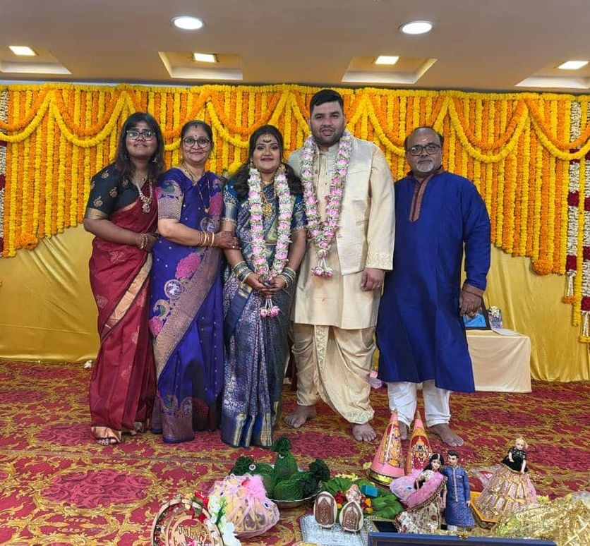
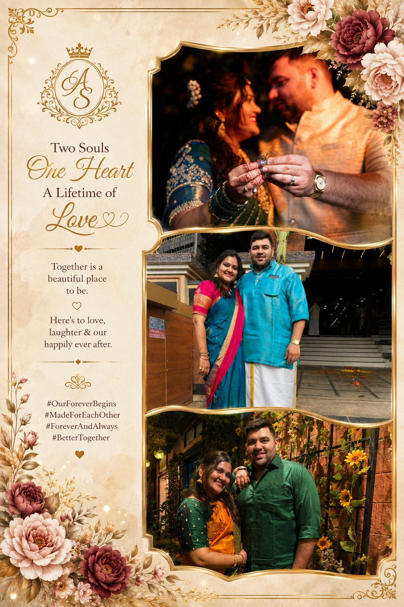

THE BRIDE
Anisha Srinivas
Daughter of Mr. P. R. Srinivas & Mrs. Shyamala Srinivas
Two families, one story, a lifetime of light.
RSVP ON WHATSAPPWith the blessings of our families, we invite you to celebrate the beginning of our forever.
Daughter of Mr. P. R. Srinivas & Mrs. Shyamala Srinivas
Son of CA Srikanth & Mrs. Kala Srikanth
With the blessings of our families, we invite you to celebrate the beginning of our forever.
The groom sets off for Kashi with a walking stick, umbrella, palm-leaf fan and the Bhagavad Gita — until the bride's father gently invites him back, offering his daughter's hand, to soft nadaswaram music.
The swinging of the oonjal reminds the couple that the ups and downs of life are met together — with stability, balance and equanimity.
Exchanging garlands, the bride and groom willingly accept each other for life — intertwining their hearts, minds and families before God and all who love them.
The bride's father places her hands into the groom's before the sacred fire — the most tender giving of all, witnessed by those we love.
The Thali Kattu — three sacred knots tied at the emotional pinnacle of a traditional Iyer wedding, uniting minds, bodies and souls with prayers for a long and joyful life together.
The hands that raised us, and the hearts that bring us together.

Parents & family of the bride

Parents & family of the groom
A few of our favourite frames along the way.


Near HDFC Bank, Sarojini Devi Road, Secunderabad, Telangana, India
SUNDAY, 25 OCTOBER 2026 · 08:00 — 09:30 HRS
OPEN DIRECTIONS VIEW ON GOOGLE MAPSSUNDAY, 25 OCTOBER 2026
#AnishaSrivatsanWedding
Your RSVP message will open in WhatsApp.
P. R. SrinivasShyamala Srinivas